|
Non-Homogeneous Waveguides |

  
|
|
Non-Homogeneous Waveguides |
|
Note: The development given here follows that of Fernandez and Lu, “Microwave and Optical Waveguide Analysis”, and of Silvester and Ferrari, “Finite Elements for Electrical Engineers”.
In many applications, a waveguide is partially or inhomogeneously filled with dielectric material. In this case, pure TE and TM modes do not exist. Both  and 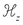 exist simultaneously, and the propagation modes are hybrid in nature.
and 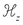 exist simultaneously, and the propagation modes are hybrid in nature.
It is possible to address a simultaneous solution of equations (3.4) in a manner similar to (3.8). However, care must be taken to keep the  parameter inside of some of the derivatives, and problems arise with the simplifications implicit in (3.7). This approach also has been plagued with spurious solution modes. It is claimed that these spurious modes arise because the axial field model does not explicitly impose
parameter inside of some of the derivatives, and problems arise with the simplifications implicit in (3.7). This approach also has been plagued with spurious solution modes. It is claimed that these spurious modes arise because the axial field model does not explicitly impose  , and that the spurious modes are those for which this condition is violated.
, and that the spurious modes are those for which this condition is violated.
An alternative approach seeks to reduce the equations (3.4) to a pair of equations in the transverse components of the magnetic field, 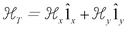. In the process, the condition  is explicitly imposed, and it is claimed that no spurious modes arise.
is explicitly imposed, and it is claimed that no spurious modes arise.
In the development that follows, we continue to treat  as a constant (invalidating use where magnetic materials are present), but we exercise more care in the treatment of
as a constant (invalidating use where magnetic materials are present), but we exercise more care in the treatment of  .
.
For notational convenience, we will denote the components of  as 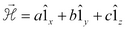 and use subscripts to denote differentiation. The first equation of (3.4) can then be expanded with (3.5) to give
as 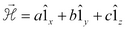 and use subscripts to denote differentiation. The first equation of (3.4) can then be expanded with (3.5) to give
(3.11) 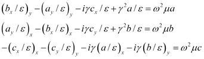
The condition  allows us to replace
allows us to replace
(3.12) 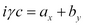
and to eliminate the third equation. We can also define 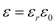 and 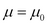and multiply through by 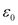 leaving
(3.13) 
In vector form we can write this as
(3.14) 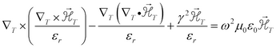
The equation pair (3.13) is an eigenvalue problem in 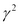. We can no longer bundle the 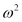 and terms inside the eigenvalue, because the  dividing is now variable across the domain. Given a driving frequency 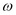, we can compute the axial wave numbers
dividing is now variable across the domain. Given a driving frequency 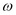, we can compute the axial wave numbers  for which propagating modes exist.
for which propagating modes exist.